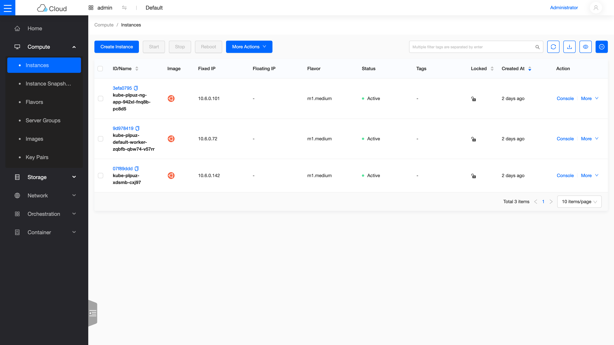

Day 9: Day-2 Operations——升版、node group、cluster-autoscaler¶
課程定位:cluster 開起來只是開始,Day-2 才是生產重點。本日用 CAPI 做三件事:① K8s 小版升級(rolling)② 新增 node group ③ cluster-autoscaler 自動擴縮。三者都會 surge 出新 nested VM,所以先解決 Nova disk 的帳。
原理與架構¶
1. CAPI rolling upgrade:surge → drain → replace(不 in-place 改套件)¶
CAPI 升版不在舊節點上 apt upgrade,而是換新 VM:
KubeadmControlPlane(1 replica)升版:
scale up 到 2(開一台新版 master)→ 等新 master join、etcd 同步
→ 舊 master cordon+drain+delete → 回 1 replica ← 這步需要「surge 空間」
MachineDeployment(worker)升版:
同理 rolling:新版 worker 起 → 舊的 drain+delete
好處:節點永遠是「乾淨的目標版本 image」,沒有升級殘留;壞處:每次滾動要有多開一台 VM 的資源(本 lab 的 disk 關卡)。升版目標由 template 的 kube_tag + image 決定,openstack coe cluster upgrade <cluster> <new-template> 觸發。
2. 為什麼要調 disk_allocation_ratio¶
單機 compute 上,Nova 的 disk 用 flavor 磁碟總和計帳(不是實際用量),SHUTOFF 也算。nested VM 是 thin qcow2,實際用量遠低於 flavor 宣告(m1.medium 宣告 40GB,實裝可能 3-5GB)。升版 surge 一台 40GB 會撞 No valid host。解:[DEFAULT] disk_allocation_ratio = 3.0 → placement 的 DISK_GB 可分配量 ×3(122→366),surge 有空間。這是 lab thin-provisioning 的正確調校,生產環境依實際超賣風險設定。
3. node group ↔ MachineDeployment ↔ ClusterClass topology¶
magnum-cluster-api 用 ClusterClass(managed topology):cluster 的 spec.topology.workers.machineDeployments[] 是 node group 的宣告源,topology controller 據此建/管 MachineDeployment。openstack coe nodegroup create = 在 topology 陣列多加一格。踩雷:driver 對新 MD 若沒帶 availability_zone label,failureDomain 會是 null,被 CAPI v1.13 topology schema 拒(見地雷 2)。
4. cluster-autoscaler 在 CAPI 上怎麼運作¶
- provider
clusterapi:autoscaler 不直接開 VM,而是改 MachineDeployment 的 replicas,CAPO 再去 Nova 開節點。 - 靠 MD(或 topology MD)的兩個 annotation 界定範圍:
cluster.x-k8s.io/cluster-api-autoscaler-node-group-min-size/max-size。 - 拓樸(本 lab,autoscaler 跑在 kind mgmt):in-cluster 讀/寫 MachineDeployment、
--kubeconfig指 workload 看 pending pod。 - managed topology 的所有權陷阱:topology 若硬寫
replicas: N,topology controller 會把 autoscaler 的調整打回去(replicas 一直 1↔3 flap)。要把該 MD 在 topology 的replicas拿掉(交給 autoscaler 擁有)。driver 的auto_scaling_enabled=truelabel 正是在建立時做這件事;本 lab cluster 沒帶該 label,故手動 patch topology 示範。
步驟¶
A. disk 準備¶
kolla-ansible deploy -i ~/all-in-one --tags nova
# 驗證:pip install osc-placement; openstack resource provider inventory list <rp> → DISK_GB allocation_ratio=3.0
B. 升版 v1.34.8 → v1.35.5¶
# 1. 目標版本 node image + template(3 個 Azure label 齊全)
curl -fLO https://github.com/vexxhost/capo-image-elements/releases/download/2026.05-7/ubuntu-24.04-v1.35.5.qcow2
openstack image create ubuntu-24.04-v1.35.5 --disk-format qcow2 --container-format bare --public \
--file ubuntu-24.04-v1.35.5.qcow2 --property os_distro=ubuntu --property os_version=24.04
openstack coe cluster template create k8s-v1.35.5-azure \
--image ubuntu-24.04-v1.35.5 --external-network ext-net --dns-nameserver 8.8.8.8 \
--master-lb-enabled --master-flavor m1.medium --flavor m1.medium \
--network-driver calico --docker-storage-driver overlay2 --coe kubernetes \
--label kube_tag=v1.35.5 --label fixed_subnet_cidr=10.6.0.0/24 --label octavia_provider=amphora
# 2. 觸發 rolling upgrade,監控 machine 版本滾動
openstack coe cluster upgrade k8s-lab k8s-v1.35.5-azure
watch 'KUBECONFIG=~/.kube/config kubectl -n magnum-system get machine -o custom-columns=P:.status.phase,V:.spec.version'
# UPDATE_COMPLETE 後 kubectl get nodes 全 v1.35.5
C. node group¶
# ⚠️ 必帶 availability_zone label,否則 failureDomain=null 被拒(地雷 2)
openstack coe nodegroup create k8s-lab ng-app --node-count 1 --role app \
--labels availability_zone=nova
openstack coe nodegroup list k8s-lab # ng-app CREATE_COMPLETE
kubectl get nodes -L node.cluster.x-k8s.io/nodegroup # 新節點 role=app
D. cluster-autoscaler(手動 CAPI 示範)¶
export KUBECONFIG=~/.kube/config # kind mgmt
# 1. 標註 ng-app MD 的 min/max
MD=$(kubectl -n magnum-system get machinedeployment -o name | grep ng-app)
kubectl -n magnum-system annotate $MD \
cluster.x-k8s.io/cluster-api-autoscaler-node-group-min-size=1 \
cluster.x-k8s.io/cluster-api-autoscaler-node-group-max-size=3 --overwrite
# 2. topology 交出 replicas 擁有權(關鍵,原因見地雷 3)
kubectl -n magnum-system patch cluster kube-plpuz --type=json -p \
'[{"op":"remove","path":"/spec/topology/workers/machineDeployments/1/replicas"},
{"op":"add","path":"/spec/topology/workers/machineDeployments/1/metadata/annotations",
"value":{"cluster.x-k8s.io/cluster-api-autoscaler-node-group-min-size":"1",
"cluster.x-k8s.io/cluster-api-autoscaler-node-group-max-size":"3"}}]'
# 3. 部署 autoscaler 到 kind(clusterapi provider,--kubeconfig 指 workload)——關鍵 image/args:
# image: registry.k8s.io/autoscaling/cluster-autoscaler:v1.35.1
# args: --cloud-provider=clusterapi --clusterapi-cloud-config-authoritative
# --node-group-auto-discovery=clusterapi:namespace=magnum-system,clusterName=<你的cluster名>
# 4. 觸發:workload 部署超量(nodeSelector=ng-app、每 pod 1 CPU × 3)→ pending → autoscaler 拉 ng-app 1→3
cluster 名別照抄,autoscaler 完整 manifest 從哪來
上面的 kube-plpuz 是本課環境的 cluster 名(Magnum 帶隨機後綴),你的不一樣——先查再代入(patch 指令、autoscaler 的 clusterName args 都要換):
步驟 3 的完整 Deployment + ServiceAccount/RBAC 是 cluster-autoscaler 官方 clusterapi provider 範例 的標準組態——本課只改三處:image/args 如上、autoscaler 跑在 kind mgmt(in-cluster 讀寫 MachineDeployment)、--kubeconfig 指向 workload cluster 的 kubeconfig secret(讓它看得到 pending pod)。這份 manifest 依你的 secret 名稱與 RBAC 而定,故不逐字附上。
驗收 checkpoint¶
逐項驗證,全部符合判準才算完成今天。「本課環境的結果」欄是我們實測的參考值——你的 IP、耗時等數字會不同,但判準必須成立:
| 驗證 | 判準 | 本課環境的結果 |
|---|---|---|
| disk ratio | placement DISK_GB allocation_ratio=3.0 | surge master 排得進 |
| 升版 | rolling 完成、nodes 全新版 | v1.34.8 → v1.35.5(surge→drain→replace,~5.5 分) |
| node group | ng-app CREATE_COMPLETE、節點 role=app join | 符合 |
| autoscaler 發現 | discovered MachineDeployment ng-app (min:1 max:3) | 符合 |
| autoscaler 觸發 | pending pod → ng-app 自動 1→3、pods 全排上 | 3/3 Running,2 新節點自動 join |
| scale-down | 移除負載後回 min | 刪 scale-test 後 autoscaler 縮回 |
地雷記錄¶
地雷 1:升版 surge 撞 Nova No valid host¶
見原理 §2。單機 compute disk 用 flavor 總和計帳,升版多開一台就爆。解:disk_allocation_ratio=3.0(thin qcow2 可安全超賣)。
地雷 2:nodegroup failureDomain: null 被 CAPI 拒(solutions 級)¶
openstack coe nodegroup create 直接 CREATE_FAILED:spec.topology.workers.machineDeployments[1].failureDomain: Invalid value: "null" ... must be of type string。driver 對新 MD 設 failureDomain = labels.get("availability_zone"),沒這 label 就是 None→null,CAPI v1.13 topology schema 不收 null(第一個 default-worker 是 "" 合法)。解:--labels availability_zone=nova。完整記錄見排錯手冊:nodegroup failureDomain null。
地雷 3:autoscaler 在 managed topology 上 replicas 被打回(flap)¶
autoscaler 正確偵測 pending、把 MD replicas 設 3,但 topology controller 依 spec.topology...replicas: 1 一直打回 1(監控看到 1↔3 來回)。managed topology 下 replicas 由 topology 擁有。解:把該 MD 在 topology 的 replicas 移除(交給 autoscaler)。生產做法是建 cluster 時帶 auto_scaling_enabled=true + nodegroup min/max,driver 會自動配好 topology;本 lab cluster 未帶該 label,故手動 patch。
地雷 4:autoscaler 拓樸選擇(kind vs workload)¶
autoscaler 跑 kind(mgmt)最省事:in-cluster 讀 MachineDeployment、--kubeconfig 指 workload(其 API FIP 172.24.4.x 從 kind 可達)。若跑 workload 內,要餵 mgmt 的 kubeconfig,但 kind API 綁 127.0.0.1:33689(host loopback)workload pod 打不到,得額外 port-forward + skip-TLS,較麻煩。
從儀表板看成果¶

Instance 列表(Skyline 檢視):三台 Active 的節點就是 workload cluster 的全部家當——注意第一台 ng-app 開頭的節點,它是本日 node group 操作的產物。
延伸閱讀¶
想往下深挖,從這幾份開始:
- Nova 排程與資源配置 —— allocation ratio 的官方說明;本章調
disk_allocation_ratio的理論依據。 - Magnum User Guide —— rolling upgrade 與 node group 的官方參數定義,本章兩個主題的出處。
- Kubernetes Cluster Autoscaler —— 自動擴縮的上游專案;各雲 provider(含 Magnum)的支援狀態與設定。
- Kolla-Ansible 維運指南 —— reconfigure/upgrade 這些日常操作的官方工作流。
下一步(Day 10)¶
Terraform 接管(terraform-provider-openstack 管 network/VM/LB)+ teardown 演練(kolla-ansible destroy → 重部速度驗證)+ 寫 sprint3-reflection.md。開工前照 Day8 Pre-flight 確認 kind/magnum/octavia o-hm0 就緒。